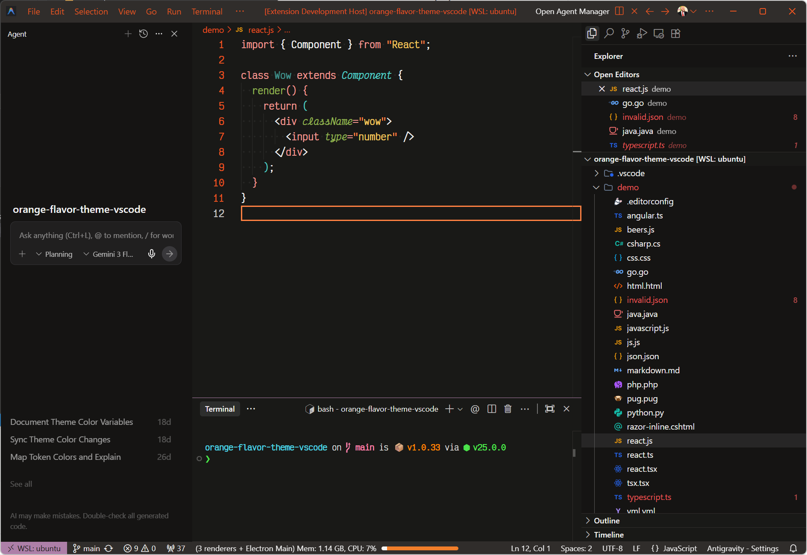

Where Warmth Meets Craft
A warm, organic dark theme for VS Code — earthy tones, vibrant orange accents, and soft contrast designed for the human behind the keyboard.

Features
Two Variants
Humans — a warm, deep charcoal dark theme with earthy accents. Humans Light — a clean, soft light variant with the same humanist palette. Each variant has a fully independent color system.
Semantic Highlighting
Over 30 languages get dedicated TextMate scoping rules — from C++ and Rust to Markdown and GraphQL. General-purpose rules ensure every language looks consistent. View language support →
Eye Comfort
Soft contrast ratios on a deep charcoal background minimize eye strain during long coding sessions. Vibrant accents provide just enough pop to keep your workspace alive without overwhelming your focus.